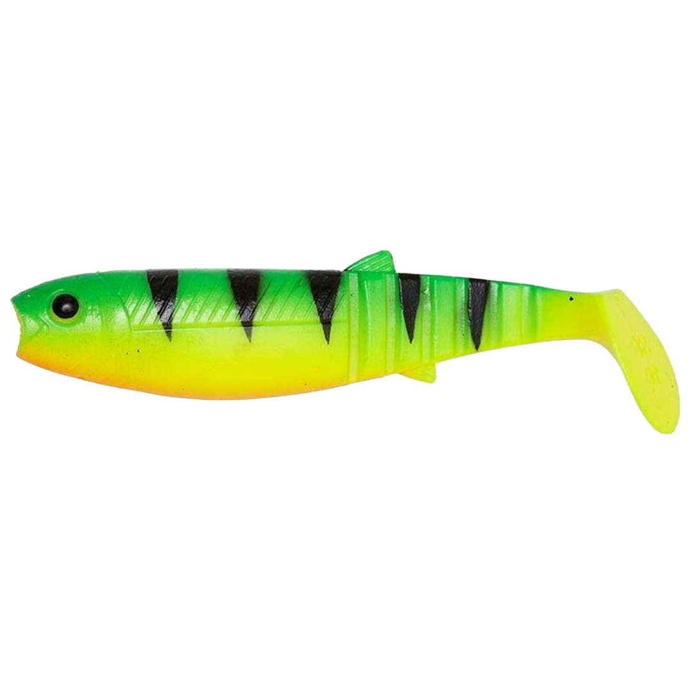
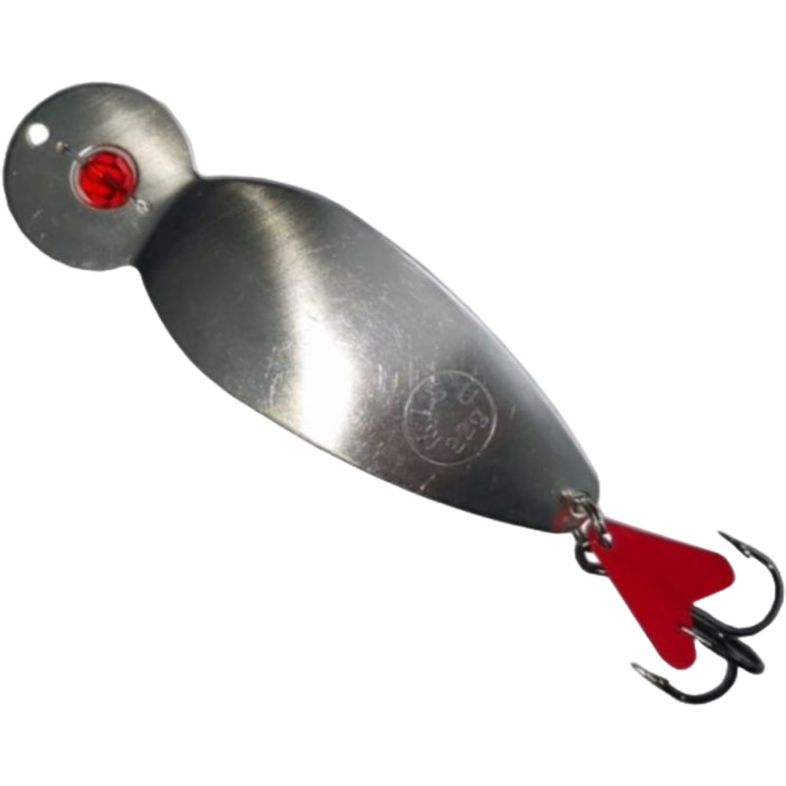
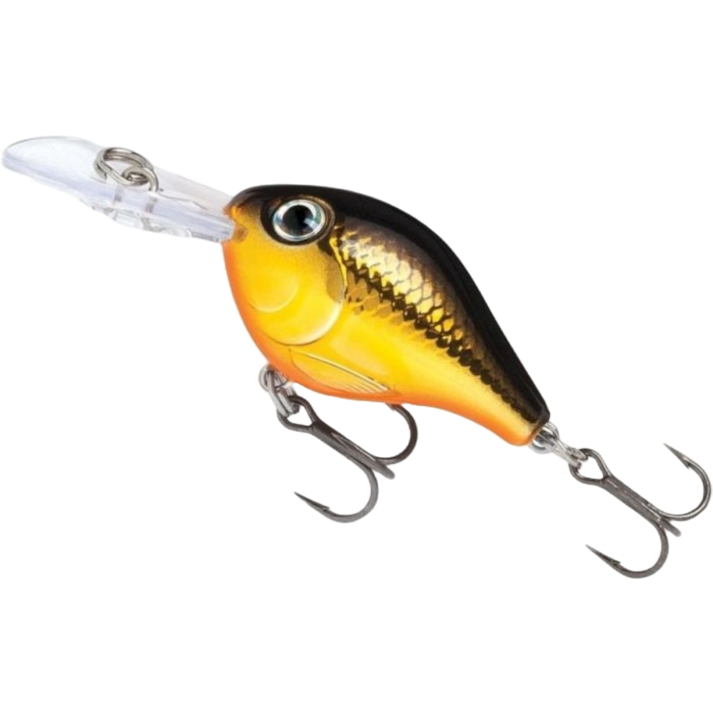

Momeli pentru pescuit pește răpitor

Twistere
Twisterele sunt năluci soft din silicon, foarte eficiente pentru biban și șalău.

Lingurițe
Lingurițele sunt metalice, excelente pentru știucă și avat. Imita mișcarea unui peștișor rănit.

Voblere
Voblerele sunt năluci dure care plutesc sau se scufundă, potrivite pentru majoritatea răpitorilor.